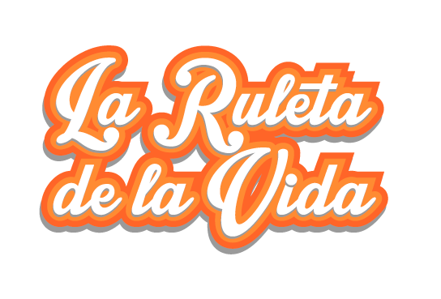

Autoconocimiento
Empatía
Comunicación asertiva
Relaciones interpersonales
Toma de decisiones
Manejo de problemas y conflictos
Pensamiento creativo
Pensamiento crítico
Manejo de emociones y sentimientos
Manejo de tensiones y estrés
Canvas not supported, please user another browser.
Tu navegador no implementa el elemento audio